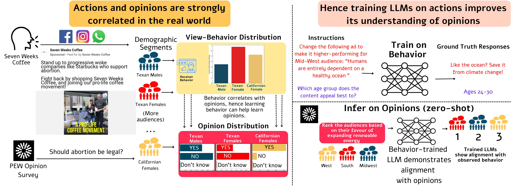
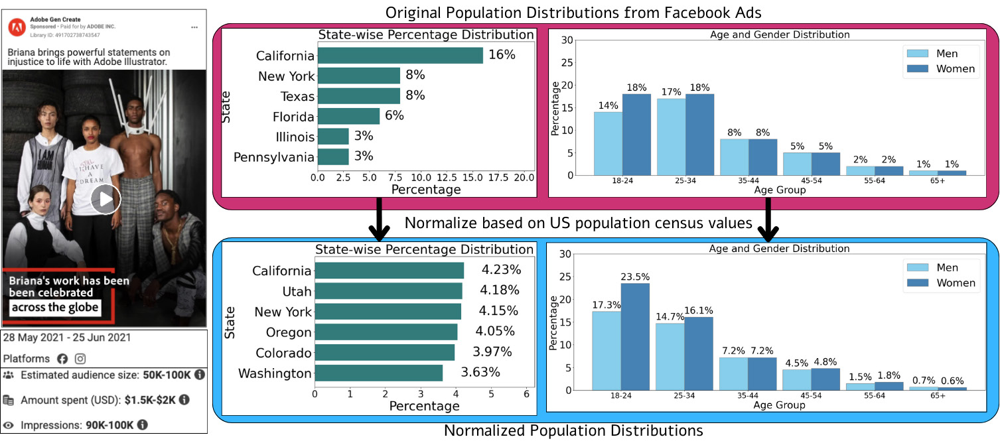

ALPHA: Action-Based Learning for Pluralistic Human Alignment in Large Language Models
AAAI 2026
Get in touch with us at behavior-in-the-wild@googlegroups.com
Introducing AVA (AlignViaActions) dataset consisting of 50 million instruction pairs. AVA can be used to align any LLM with societal opinions, and also for teaching tasks such as transcreation, behavior simulation, ad generation, and audience selection.
We show that even with the sparse signals about opinions present in the behavioral data in AVA, the models trained on behavioral data in zero-shot outperform models trained on expert annotations or opinion surveys. We show this across four datasets: OpinionQA, GlobalOpinionQA, CultureBench, and CultureNLI.
We expand the OpinionsQA dataset, which is used to evaluate human-LLM opinion alignment based on PEW survey results, from 1498 questions to more than 14,000 questions. While the original dataset uses only 15 surveys, we used the complete set of 117 surveys in our updated version.


Abstract
"Only in actions can you fully recognize the forces operative in social behavior" - Milgram, 1974.
Large language models (LLMs) have become ubiquitous in various applications, but aligning them with societal expectations remains challenging. To align LLMs with humans, current alignment methods rely heavily on human-annotated datasets, which are expensive, difficult to scale, and often biased toward specific demographic subgroups. We introduce a novel approach for LLM alignment by training on behavioral data. Our approach is based on the maxim in psychology that actions (behavior) have a strong consistency with opinions. Leveraging this insight, we developed AlignViaActions (AVA50M) comprising over 50 million samples derived from 1.5 million advertisements, including content and demographic viewing behaviors. We train LLMs on AVA50M, demonstrating significant improvements over existing alignment techniques across multiple societal and cultural alignment benchmarks, including GlobalOpinionQA, OpinionQA, CultureNLI, and CultureBank. Through this, we demonstrate that by observing and learning from behavior, LLMs can infer the underlying opinions and cultural norms. This approach addresses key limitations of current methods, offering improved scalability, demographic representation, and adaptability to evolving societal views. Our results suggest the potential for behavioral data to replace or complement traditional expert-annotation-based alignment techniques.
Results
| Model (zero-shot) | OpinionQA-XL | OpinionQA | GlobalOpinionQA | CultureBank | CultureNLI | |||||
|---|---|---|---|---|---|---|---|---|---|---|
| Representativeness (↑) | Steerability (↑) | Representativeness (↑) | Steerability (↑) | Avg Sim (↑) | Skew (↓) | Reddit (↑) | Tik-Tok (↑) | US (↑) | IN (↑) | |
| Llama-2-7B-chat | 83.61 | 79.09 | 86.18 | 79.18 | 83.6 | 2.2 | 85.93 | 92.08 | 39.2 | 39.5 |
| Mistral-7B-Instruct | 82.56 | 80.10 | 84.69 | 80.37 | 79.3 | 3.2 | 70.02 | 67.23 | 42.5 | 43.8 |
| Vicuna-7B-v1.5 | 72.26 | 77.55 | 77.63 | 77.68 | 84.94 | 1.92 | 64.88 | 55.02 | 55.72 | 56.15 |
| Llama-2-7B-SFT-CultureBank | 82.70 | 78.46 | 84.94 | 78.55 | 85.4 | 1.5 | 85.93 | 92.08 | 39.2 | 39.6 |
| Behavior Finetuned LLama-2-7B-chat | 85.15 | 81.95 | 88.43 | 81.98 | 86.69 | 1.43 | 92.39 | 95.87 | 47.14 | 43.92 |
| LLama-2-13B-base | 80.45 | 79.03 | 83.03 | 79.14 | 83.13 | 1.45 | 73.19 | 89.02 | 53.34 | 49.48 |
| Llama-2-13B-chat | 81.18 | 81.11 | 84.29 | 81.35 | 84.03 | 1.96 | 86.17 | 92.34 | 60.08 | 61.73 |
| Vicuna-13B | 79.06 | 78.73 | 83.44 | 78.85 | 86.99 | 1.91 | 85.93 | 92.08 | 52.07 | 40.23 |
| Behavior Finetuned LLama-2-13B-chat | 85.76 | 83.54 | 89.44 | 83.53 | 87.31 | 1.49 | 86.28 | 92.25 | 62.26 | 66.44 |
| Mixtral-8x7B-Instruct | 84.96 | 82.31 | 88.39 | 82.25 | 79.5 | 2.7 | 87.35 | 88.59 | 59.90 | 60.80 |
| Mixtral-8X7B-SFT-CultureBank | 84.40 | 79.66 | 78.69 | 79.67 | 81.80 | 2.80 | 86.19 | 92.08 | 61.50 | 61.30 |
| Mixtral-8x7B-DPO-CultureBank | 82.70 | 80.22 | 78.79 | 80.90 | 80.50 | 2.60 | 86.19 | 91.74 | 56.30 | 55.40 |
| Llama-2-70B-chat | 85.08 | 82.40 | 88.83 | 82.28 | 83.6 | 2.2 | 87.17 | 92.76 | 69.70 | 68.90 |
| Behavior Finetuned LLama-2-70B-chat | 86.65 | 83.23 | 89.95 | 83.31 | 86.31 | 1.67 | 88.48 | 92.65 | 73.87 | 73.67 |
Table 1: Comparison of all the models across Opinion and Culture tasks shows that our models trained on sparse in-the-wild behaviour signals, despite being zero-shot, outperforms models in opinion alignment and comes close to cultural alignment tasks. Furthermore, the model shows strong results beating even larger models trained on clean annotated data. We train variants of Llama-2
BibTeX
@inproceedings{bhattacharyya2026alpha,
title={ALPHA: Action-Based Learning for Pluralistic Human Alignment in Large Language Models},
author={Bhattacharyya, Aanisha and Agrawal, Susmit and Singla, Yaman Kumar and Menta, Tarun Ram and Sr, Nikitha and Shah, Rajiv Ratn and Chen, Changyou and Krishnamurthy, Balaji},
booktitle={Proceedings of the AAAI Conference on Artificial Intelligence},
volume={40},
number={44},
pages={37249--37258},
year={2026},
doi={10.1609/aaai.v40i44.41056},
url={https://ojs.aaai.org/index.php/AAAI/article/view/41056}
}Terms Of Service
AVA is sourced from Meta Ads Archive (https://www.facebook.com/ads/library/). The dataset annotations and video links for AVA are released under the MIT License. The videos, transcripts, captions, etc. are subject to the license described in the Meta Ads Archive. AVA being sourced from Meta Ads, may contain noisier content. While the videos originate from brands, some brand content may be perceived as offensive by certain individuals.
Acknowledgement
We thank Adobe for their generous sponsorship.